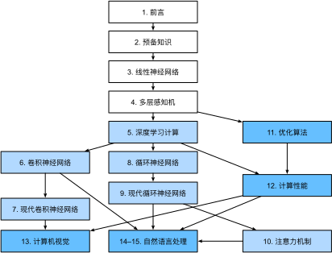

前言
几年前，在大公司和初创公司中，并没有大量的深度学习科学家开发智能产品和服务。我们中年轻人（作者）进入这个领域时，机器学习并没有在报纸上获得头条新闻。我们的父母根本不知道什么是机器学习，更不用说为什么我们可能更喜欢机器学习，而不是从事医学或法律职业。机器学习是一门具有前瞻性的学科，在现实世界的应用范围很窄。而那些应用，例如语音识别和计算机视觉，需要大量的领域知识，以至于它们通常被认为是完全独立的领域，而机器学习对这些领域来说只是一个小组件。因此，神经网络——我们在本书中关注的深度学习模型的前身，被认为是过时的工具。
就在过去的五年里，深度学习给世界带来了惊喜，推动了计算机视觉、自然语言处理、自动语音识别、强化学习和统计建模等领域的快速发展。有了这些进步，我们现在可以制造比以往任何时候都更自主的汽车（不过可能没有一些公司试图让大家相信的那么自主），可以自动起草普通邮件的智能回复系统，帮助人们从令人压抑的大收件箱中解放出来。在围棋等棋类游戏中，软件超越了世界上最优秀的人，这曾被认为是几十年后的事。这些工具已经对工业和社会产生了越来越广泛的影响，改变了电影的制作方式、疾病的诊断方式，并在基础科学中扮演着越来越重要的角色——从天体物理学到生物学。
关于本书
这本书代表了我们的尝试——让深度学习可平易近人，教会人们概念、背景和代码。
一种结合了代码、数学和HTML的媒介
任何一种计算技术要想发挥其全部影响力，都必须得到充分的理解、充分的文档记录，并得到成熟的、维护良好的工具的支持。关键思想应该被清楚地提炼出来，尽可能减少需要让新的从业者跟上时代的入门时间。成熟的库应该自动化常见的任务，示例代码应该使从业者可以轻松地修改、应用和扩展常见的应用程序，以满足他们的需求。以动态网页应用为例。尽管许多公司，如亚马逊，在20世纪90年代开发了成功的数据库驱动网页应用程序。但在过去的10年里，这项技术在帮助创造性企业家方面的潜力已经得到了更大程度的发挥，部分原因是开发了功能强大、文档完整的框架。
测试深度学习的潜力带来了独特的挑战，因为任何一个应用都会将不同的学科结合在一起。应用深度学习需要同时了解（1）以特定方式提出问题的动机；（2）给定建模方法的数学；（3）将模型拟合数据的优化算法；（4）能够有效训练模型、克服数值计算缺陷并最大限度地利用现有硬件的工程方法。同时教授表述问题所需的批判性思维技能、解决问题所需的数学知识，以及实现这些解决方案所需的软件工具，这是一个巨大的挑战。
在我们开始写这本书的时候，没有资源能够同时满足一些条件：（1）是最新的；（2）涵盖了现代机器学习的所有领域，技术深度丰富；（3）在一本引人入胜的教科书中，人们可以在实践教程中找到干净的可运行代码，并从中穿插高质量的阐述。我们发现了大量关于如何使用给定的深度学习框架（例如，如何对TensorFlow中的矩阵进行基本的数值计算)或实现特定技术的代码示例（例如，LeNet、AlexNet、ResNet的代码片段），这些代码示例分散在各种博客帖子和GitHub库中。但是，这些示例通常关注如何实现给定的方法，但忽略了为什么做出某些算法决策的讨论。虽然一些互动资源已经零星地出现以解决特定主题。例如，在网站Distill上发布的引人入胜的博客帖子或个人博客，但它们仅覆盖深度学习中的选定主题，并且通常缺乏相关代码。另一方面，虽然已经出现了几本教科书，其中最著名的是 :cite:Goodfellow.Bengio.Courville.2016（中文名《深度学习》），它对深度学习背后的概念进行了全面的调查，但这些资源并没有将这些概念的描述与这些概念的代码实现结合起来。有时会让读者对如何实现它们一无所知。此外，太多的资源隐藏在商业课程提供商的付费壁垒后面。
我们着手创建的资源可以：（1）每个人都可以免费获得；（2）提供足够的技术深度，为真正成为一名应用机器学习科学家提供起步；（3）包括可运行的代码，向读者展示如何解决实践中的问题；（4）允许我们和社区的快速更新;（5）由一个论坛作为补充，用于技术细节的互动讨论和回答问题。
这些目标经常是相互冲突的。公式、定理和引用最好用LaTeX来管理和布局。代码最好用Python描述。网页原生是HTML和JavaScript的。此外，我们希望内容既可以作为可执行代码访问、作为纸质书访问，作为可下载的PDF访问，也可以作为网站在互联网上访问。目前还没有完全适合这些需求的工具和工作流程，所以我们不得不自行组装。我们在 :numref:sec_how_to_contribute 中详细描述了我们的方法。我们选择GitHub来共享源代码并允许编辑，选择Jupyter记事本来混合代码、公式和文本，选择Sphinx作为渲染引擎来生成多个输出，并为论坛提供讨论。虽然我们的体系尚不完善，但这些选择在相互冲突的问题之间提供了一个很好的妥协。我们相信，这可能是第一本使用这种集成工作流程出版的书。
在实践中学习
许多教科书教授一系列的主题，每一个都非常详细。例如，Chris Bishop的优秀教科书 :cite:Bishop.2006 ，对每个主题都教得很透彻，以至于要读到线性回归这一章需要大量的工作。虽然专家们喜欢这本书正是因为它的透彻性，但对初学者来说，这一特性限制了它作为介绍性文本的实用性。
在这本书中，我们将适时教授大部分概念。换句话说，你将在实现某些实际目的所需的非常时刻学习概念。虽然我们在开始时花了一些时间来教授基础的背景知识，如线性代数和概率，但我们希望你在思考更深奥的概率分布之前，先体会一下训练模型的满足感。
除了提供基本数学背景速成课程的几节初步课程外，后续的每一章都介绍了适量的新概念，并提供可独立工作的例子——使用真实的数据集。这带来了组织上的挑战。某些模型可能在逻辑上组合在单节中。而一些想法可能最好是通过连续允许几个模型来传授。另一方面，坚持“一个工作例子一节”的策略有一个很大的好处：这使你可以通过利用我们的代码尽可能轻松地启动你自己的研究项目。只需复制这一节的内容并开始修改即可。
我们将根据需要将可运行代码与背景材料交错。通常，在充分解释工具之前，我们常常会在提供工具这一方面犯错误（我们将在稍后解释背景）。例如，在充分解释随机梯度下降为什么有用或为什么有效之前，我们可以使用它。这有助于给从业者提供快速解决问题所需的弹药，同时需要读者相信我们的一些决定。
这本书将从头开始教授深度学习的概念。有时，我们想深入研究模型的细节，这些的细节通常会被深度学习框架的高级抽象隐藏起来。特别是在基础教程中，我们希望读者了解在给定层或优化器中发生的一切。在这些情况下，我们通常会提供两个版本的示例：一个是我们从零开始实现一切，仅依赖张量操作和自动微分；另一个是更实际的示例，我们使用深度学习框架的高级API编写简洁的代码。一旦我们教了您一些组件是如何工作的，我们就可以在随后的教程中使用高级API了。
内容和结构
全书大致可分为三个部分，在 :numref:fig_book_org 中用不同的颜色呈现：

:label:fig_book_org
第一部分包括基础知识和预备知识。 :numref:
chap_introduction提供深度学习的入门课程。然后在 :numref:chap_preliminaries中，我们将快速介绍实践深度学习所需的前提条件，例如如何存储和处理数据，以及如何应用基于线性代数、微积分和概率基本概念的各种数值运算。 :numref:chap_linear和 :numref:chap_perceptrons涵盖了深度学习的最基本概念和技术，例如线性回归、多层感知机和正则化。接下来的五章集中讨论现代深度学习技术。 :numref:
chap_computation描述了深度学习计算的各种关键组件，并为我们随后实现更复杂的模型奠定了基础。接下来，在 :numref:chap_cnn和 :numref:chap_modern_cnn中，我们介绍了卷积神经网络（convolutional neural network，CNN），这是构成大多数现代计算机视觉系统骨干的强大工具。随后，在 :numref:chap_rnn和 :numref:chap_modern_rnn中，我们引入了循环神经网络(recurrent neural network，RNN)，这是一种利用数据中的时间或序列结构的模型，通常用于自然语言处理和时间序列预测。在 :numref:chap_attention中，我们介绍了一类新的模型，它采用了一种称为注意力机制的技术，最近它们已经开始在自然语言处理中取代循环神经网络。这一部分将帮助读者快速了解大多数现代深度学习应用背后的基本工具。第三部分讨论可伸缩性、效率和应用程序。 首先，在 :numref:
chap_optimization中，我们讨论了用于训练深度学习模型的几种常用优化算法。下一章 :numref:chap_performance将探讨影响深度学习代码计算性能的几个关键因素。在 :numref:chap_cv中，我们展示了深度学习在计算机视觉中的主要应用。在 :numref:chap_nlp_pretrain和 :numref:chap_nlp_app中，我们展示了如何预训练语言表示模型并将其应用于自然语言处理任务。
代码
:label:sec_code
本书的大部分章节都以可执行代码为特色，因为我们相信交互式学习体验在深度学习中的重要性。目前，某些直觉只能通过试错、小幅调整代码并观察结果来发展。理想情况下，一个优雅的数学理论可能会精确地告诉我们如何调整代码以达到期望的结果。不幸的是，这种优雅的理论目前还没有出现。尽管我们尽了最大努力，但仍然缺乏对各种技术的正式解释，这既是因为描述这些模型的数学可能非常困难，也是因为对这些主题的认真研究最近才进入高潮。我们希望随着深度学习理论的发展，这本书的未来版本将能够在当前版本无法提供的地方提供见解。
有时，为了避免不必要的重复，我们将本书中经常导入和引用的函数、类等封装在d2l包中。对于要保存到包中的任何代码块，比如一个函数、一个类或者多个导入，我们都会标记为#@save。我们在 :numref:sec_d2l 中提供了这些函数和类的详细描述。d2l软件包是轻量级的，仅需要以下软件包和模块作为依赖项：
#@tab all
#@save
import collections
from collections import defaultdict
from IPython import display
import math
from matplotlib import pyplot as plt
from matplotlib_inline import backend_inline
import os
import pandas as pd
import random
import re
import shutil
import sys
import tarfile
import time
import requests
import zipfile
import hashlib
d2l = sys.modules[__name__]
:begin_tab:mxnet
本书中的大部分代码都是基于Apache MXNet的。MXNet是深度学习的开源框架，是亚马逊以及许多大学和公司的首选。本书中的所有代码都通过了最新MXNet版本的测试。但是，由于深度学习的快速发展，一些在印刷版中代码
可能在MXNet的未来版本无法正常工作。
但是，我们计划使在线版本保持最新。如果读者遇到任何此类问题，请查看 :ref:chap_installation 以更新代码和运行时环境。
下面是我们如何从MXNet导入模块。 :end_tab:
:begin_tab:pytorch
本书中的大部分代码都是基于PyTorch的。PyTorch是一个开源的深度学习框架，在研究界非常受欢迎。本书中的所有代码都在最新版本的PyTorch下通过了测试。但是，由于深度学习的快速发展，一些在印刷版中代码可能在PyTorch的未来版本无法正常工作。
但是，我们计划使在线版本保持最新。如果读者遇到任何此类问题，请查看 :ref:chap_installation 以更新代码和运行时环境。
下面是我们如何从PyTorch导入模块。 :end_tab:
:begin_tab:tensorflow
本书中的大部分代码都是基于TensorFlow的。TensorFlow是一个开源的深度学习框架，在研究界和产业界都非常受欢迎。本书中的所有代码都在最新版本的TensorFlow下通过了测试。但是，由于深度学习的快速发展，一些在印刷版中代码可能在TensorFlow的未来版本无法正常工作。
但是，我们计划使在线版本保持最新。如果读者遇到任何此类问题，请查看 :ref:chap_installation 以更新代码和运行时环境。
下面是我们如何从TensorFlow导入模块。 :end_tab:
#@save
from mxnet import autograd, context, gluon, image, init, np, npx
from mxnet.gluon import nn, rnn
#@tab pytorch
#@save
import numpy as np
import torch
import torchvision
from torch import nn
from torch.nn import functional as F
from torch.utils import data
from torchvision import transforms
from PIL import Image
#@tab tensorflow
#@save
import numpy as np
import tensorflow as tf
#@tab paddle
#@save
import numpy as np
import warnings
warnings.filterwarnings("ignore")
import paddle
from paddle import nn
from paddle.nn import functional as F
from paddle.vision import transforms
import paddle.vision as paddlevision
from PIL import Image
paddle.disable_signal_handler()
目标受众
本书面向学生（本科生或研究生）、工程师和研究人员，他们希望扎实掌握深度学习的实用技术。因为我们从头开始解释每个概念，所以不需要过往的深度学习或机器学习背景。全面解释深度学习的方法需要一些数学和编程，但我们只假设读者了解一些基础知识，包括线性代数、微积分、概率和非常基础的Python编程。此外，在附录中，我们提供了本书所涵盖的大多数数学知识的复习。大多数时候，我们会优先考虑直觉和想法，而不是数学的严谨性。有许多很棒的书可以引导感兴趣的读者走得更远。Bela Bollobas的《线性分析》 :cite:Bollobas.1999 对线性代数和函数分析进行了深入的研究。 :cite:Wasserman.2013 是一本很好的统计学指南。如果读者以前没有使用过Python语言，那么可以仔细阅读这个Python教程。
论坛
与本书相关，我们已经启动了一个论坛，在discuss.d2l.ai。当对本书的任何一节有疑问时，请在每一节的末尾找到相关的讨论页链接。
致谢
感谢中英文草稿的数百位撰稿人。他们帮助改进了内容并提供了宝贵的反馈。 感谢Anirudh Dagar和唐源将部分较早版本的MXNet实现分别改编为PyTorch和TensorFlow实现。 感谢百度团队将较新的PyTorch实现改编为PaddlePaddle实现。 感谢张帅将更新的LaTeX样式集成进PDF文件的编译。
特别地，我们要感谢这份中文稿的每一位撰稿人，是他们的无私奉献让这本书变得更好。他们的GitHub ID或姓名是(没有特定顺序)：alxnorden, avinashingit, bowen0701, brettkoonce, Chaitanya Prakash Bapat, cryptonaut, Davide Fiocco, edgarroman, gkutiel, John Mitro, Liang Pu, Rahul Agarwal, Mohamed Ali Jamaoui, Michael (Stu) Stewart, Mike Müller, NRauschmayr, Prakhar Srivastav, sad-, sfermigier, Sheng Zha, sundeepteki, topecongiro, tpdi, vermicelli, Vishaal Kapoor, Vishwesh Ravi Shrimali, YaYaB, Yuhong Chen, Evgeniy Smirnov, lgov, Simon Corston-Oliver, Igor Dzreyev, Ha Nguyen, pmuens, Andrei Lukovenko, senorcinco, vfdev-5, dsweet, Mohammad Mahdi Rahimi, Abhishek Gupta, uwsd, DomKM, Lisa Oakley, Bowen Li, Aarush Ahuja, Prasanth Buddareddygari, brianhendee, mani2106, mtn, lkevinzc, caojilin, Lakshya, Fiete Lüer, Surbhi Vijayvargeeya, Muhyun Kim, dennismalmgren, adursun, Anirudh Dagar, liqingnz, Pedro Larroy, lgov, ati-ozgur, Jun Wu, Matthias Blume, Lin Yuan, geogunow, Josh Gardner, Maximilian Böther, Rakib Islam, Leonard Lausen, Abhinav Upadhyay, rongruosong, Steve Sedlmeyer, Ruslan Baratov, Rafael Schlatter, liusy182, Giannis Pappas, ati-ozgur, qbaza, dchoi77, Adam Gerson, Phuc Le, Mark Atwood, christabella, vn09, Haibin Lin, jjangga0214, RichyChen, noelo, hansent, Giel Dops, dvincent1337, WhiteD3vil, Peter Kulits, codypenta, joseppinilla, ahmaurya, karolszk, heytitle, Peter Goetz, rigtorp, Tiep Vu, sfilip, mlxd, Kale-ab Tessera, Sanjar Adilov, MatteoFerrara, hsneto, Katarzyna Biesialska, Gregory Bruss, Duy–Thanh Doan, paulaurel, graytowne, Duc Pham, sl7423, Jaedong Hwang, Yida Wang, cys4, clhm, Jean Kaddour, austinmw, trebeljahr, tbaums, Cuong V. Nguyen, pavelkomarov, vzlamal, NotAnotherSystem, J-Arun-Mani, jancio, eldarkurtic, the-great-shazbot, doctorcolossus, gducharme, cclauss, Daniel-Mietchen, hoonose, biagiom, abhinavsp0730, jonathanhrandall, ysraell, Nodar Okroshiashvili, UgurKap, Jiyang Kang, StevenJokes, Tomer Kaftan, liweiwp, netyster, ypandya, NishantTharani, heiligerl, SportsTHU, Hoa Nguyen, manuel-arno-korfmann-webentwicklung, aterzis-personal, nxby, Xiaoting He, Josiah Yoder, mathresearch, mzz2017, jroberayalas, iluu, ghejc, BSharmi, vkramdev, simonwardjones, LakshKD, TalNeoran, djliden, Nikhil95, Oren Barkan, guoweis, haozhu233, pratikhack, 315930399, tayfununal, steinsag, charleybeller, Andrew Lumsdaine, Jiekui Zhang, Deepak Pathak, Florian Donhauser, Tim Gates, Adriaan Tijsseling, Ron Medina, Gaurav Saha, Murat Semerci, Lei Mao, Zhu Yuanxiang, thebesttv, Quanshangze Du, Yanbo Chen。
我们感谢Amazon Web Services，特别是Swami Sivasubramanian、Peter DeSantis、Adam Selipsky和Andrew Jassy对撰写本书的慷慨支持。如果没有可用的时间、资源、与同事的讨论和不断的鼓励，这本书就不会出版。
小结
- 深度学习已经彻底改变了模式识别，引入了一系列技术，包括计算机视觉、自然语言处理、自动语音识别。
- 要成功地应用深度学习，必须知道如何抛出一个问题、建模的数学方法、将模型与数据拟合的算法，以及实现所有这些的工程技术。
- 这本书提供了一个全面的资源，包括文本、图表、数学和代码，都集中在一个地方。
- 要回答与本书相关的问题，请访问我们的论坛discuss.d2l.ai.
- 所有Jupyter记事本都可以在GitHub上下载。
练习
- 在本书discuss.d2l.ai的论坛上注册帐户。
- 在计算机上安装Python。
- 沿着本节底部的链接进入论坛，在那里可以寻求帮助、讨论这本书，并通过与作者和社区接触来找到问题的答案。
:begin_tab:mxnet
Discussions
:end_tab:
:begin_tab:pytorch
Discussions
:end_tab:
:begin_tab:tensorflow
Discussions
:end_tab:
:begin_tab:paddle
Discussions
:end_tab: